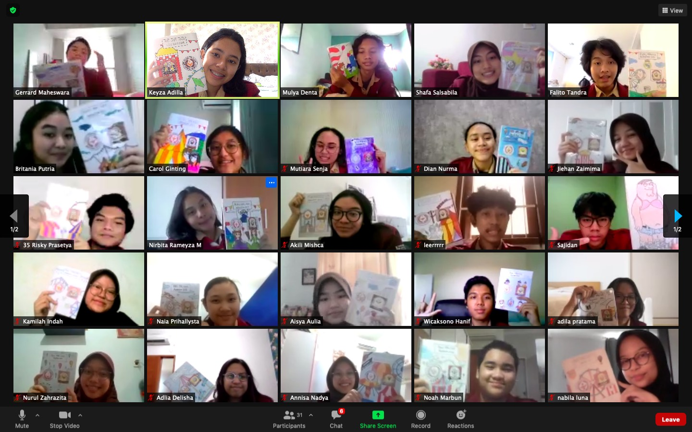

"Awal Mula" | MPK/OSIS 34 Story #1
Thursday, 1 December 2022
By Wicaksono Hanif Supriyanto
Mengawali masa-masa SMA di saat pandemi bukanlah suatu hal yang menyenangkan khususnya pada pertengahan 2020. Betapa membosankan jika setiap hari cuma belajar dan belajar. Lantas terbersit di pikiran gue untuk kembali mengikuti organisasi.
Pada jenjang sebelumnya gue sempat mengikuti 2 organisasi sekolah antara lain komunitas IT (Teknologi Informasi) dan Pasukan khusus untuk pramuka, kedua organisasi itu sangat berkesan dan selalu mewarnai masa-masa SMP gue. Tapi ada satu organisasi yang belum pernah gue coba, yaitu menjadi pengurus OSIS.
Ketika MPK/OSIS membuka pendaftaran, gue jadi semakin bimbang. Pertimbangannya adalah gue belum pernah menjadi pengurus OSIS sebelumnya. Tapi entah mengapa keraguan gue seketika hilang karena ada salah seorang teman sekelas yang meyakinkan gue untuk bergabung di organisasi ini.
Pada hari itu juga gue memberanikan diri untuk mengarahkan kursor dan mengklik link pendaftaran MPK/OSIS SMAN 34 Jakarta. Syarat awalnya cukup mudah, yaitu membuat CV, menulis essay dan membuat poster serta video kampanye yang positif. Beberapa hari kemudian, syarat-syarat itu gue lengkapi dan gue unggah supaya bisa lanjut ke tahap berikutnya.
Tahap selanjutnya adalah wawancara dan tes tertulis. Tes tertulisnya berisi pertanyaan mendasar seputar pengetahuan berorganisasi dan beberapa soal riddle. Untuk wawancaranya cukup standar namun tidak bisa dibilang mudah juga. Mungkin kuncinya adalah punya argumen yang kuat dan logis untuk bisa menjawab segala pertanyaan kakak kelas itu.
Beberapa minggu kemudian, diumumkan bahwa gue telah lolos babak penyisihan pertama, dan berhak ikut ke babak penyisihan berikutnya. Saat itu gue lumayan senang, tapi gue juga harus ingat bahwa masih ada banyak orang yang akan diseleksi lagi di babak ke-2 ini.
Babak penyisihan ke-2 ini punya tantangan yang berbeda dari babak sebelumnya. Kali ini kami para calon OSIS (CASIS) akan dibentuk kelompok. Satu kelompok berjumlah 8 orang kalau tidak salah. Kami diberi tugas untuk merancang sebuah program kerja sekreatif mungkin. Program kerja yang kami sepakati waktu itu adalah perayaan hari batik yang dibarengi dengan thrift event di sekolah. Harus gue akui kalau Ide kami ini terlalu too good to be true hehe… Tapi setelah berdiskusi bersama dan melakukan research lebih lanjut, kami akhirnya bisa menyelesaikan makalah dan ppt untuk untuk menghadapi tes presentasi program kerja yang akan diadakan beberapa hari mendatang.
Di tengah penyusunan makalah program kerja, tiba-tiba gue menerima chat dari kakak-kakak MPK/OSIS bahwa mereka menyarankan gue untuk memilih MPK ketimbang OSIS. Entahlah kenapa gue mengiyakan tawaran itu, padahal awalnya gue memilih untuk menjadi OSIS pada saat pendaftaran.
Singkat cerita tibalah hari wawancara itu. Di hari tersebut kami sekelompok harus mempresentasikan rancangan program kerja yang sudah dibuat. Walaupun dihantui perasaan ragu dan takut, tapi kami sekelompok berusaha untuk selalu menyampaikan argumen dengan baik dan menjawab semua pertanyaan yang dilontarkan kakak-kakak MPK/OSIS. Wawancara itu terasa panjang dan meresahkan, tapi pada akhirnya kami semua bisa bernapas lega karena telah menyelesaikan wawancara itu. Berakhir sudah babak penyisihan, sekarang saatnya menunggu pengumuman lolos seleksi.
Tidak lama setelah penyisihan ke-2, kami para CASIS dipanggil untuk menghadiri Zoom Meeting guna menerima pengumuman hasil seleksi. Dengan hati yang tenang dan penuh keyakinan, diumumkanlah siapa saja yang berhak mengisi 40 kursi pengurus MPK/OSIS 34 tahun tersebut. Alhamdulillah gue lolos dan diterima menjadi pengurus MPK/OSIS 34. Status gue pada saat baru masuk adalah sebagai pengurus OSIS sekaligus calon MPK, nah ketika kelas 11 nanti gue akan dilantik menjadi pengurus MPK dan bukan sebagai OSIS lagi. Ini semua sih sebab kakak kelas itu, tapi ga nyesel juga kok masuk sebagai calon MPK, justru banyak cerita seru selama menjadi MPK yang mungkin akan gue ceritakan di episode-episode berikutnya.
Setelah masuk menjadi pengurus MPK/OSIS 34, para anggota baru harus memilih seksi bidang (SIE) sesuai dengan minatnya. Pada saat itu pilihan gue jatuh ke SIE dengan nomor urut 5 yaitu “Kreativitas, Keterampilan & Kewirausahaan” Singkat cerita setelah melalui wawancara perSIE, akhirnya gue resmi bergabung dengan SIE 5 dan akan menjabat sebagai Komisi E saat dilantik menjadi MPK nanti.
Tahap terakhir sebelum menjadi pengurus MPK/OSIS yang sah adalah melalui serah terima jabatan (SERTIJAB). Acara tersebut dilaksanakan pada hari Senin, 7 Desember 2020. Usai mengucap sumpah dan janji, resmilah kami menjadi pengurus MPK/OSIS 34 periode 2020/2021.
Perjalanan panjang telah gue lewati, hingga pada akhirnya kami harus serah terima jabatan lagi untuk yang terakhir kalinya pada tanggal 7 November 2022 guna mengakhiri kepengurusan kami di MPK/OSIS 34.
Pengalaman selama menjadi MPK/OSIS 34 sangatlah berkesan, banyak hal-hal baru dan seru yang menarik untuk diceritakan di catatan mingguan ini. Nantikan episode berikutnya.